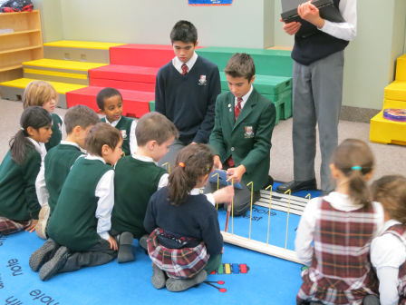
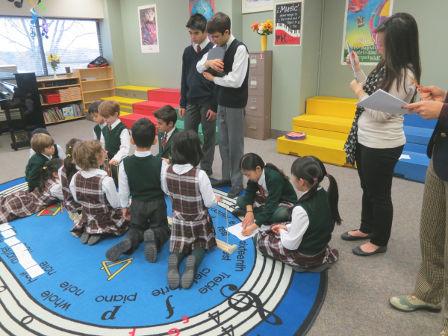
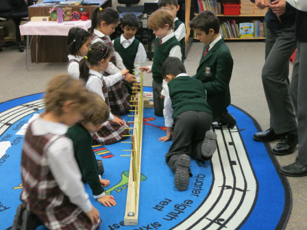
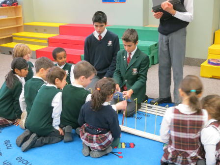
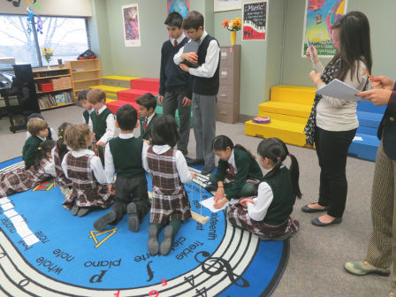
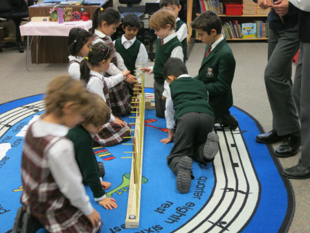
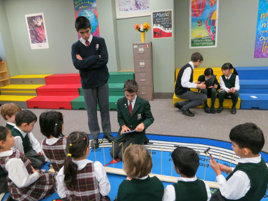
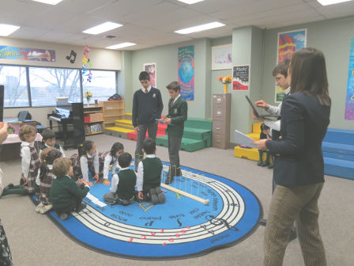
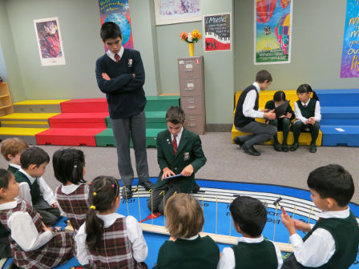
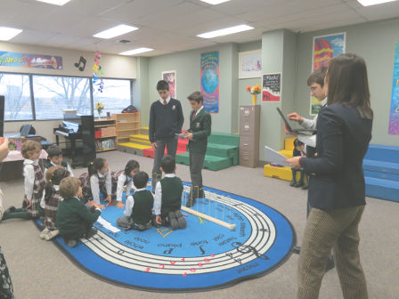

The Eurythmics method of teaching music created by Emile Jaques-Dalcroze in 1905 uses movement to teach
musical structure and rhythm. In 1926, Carl Orff Shulwerk came up with a method of teaching music that
uses the atmosphere like a child’s play world and said that music is learned by doing, improvisation
is prevalent, and simpler percussion instruments can be used to make melodies.
In 1945, Zoltan Kodaly invented the Kodaly method of teaching music. Children are first introduced to
concepts through experiences, listening, or movement, such as hand gestures that represent each note.
In the 1950’s, Shin’ichi Suzuki created a new way for children to learn music more effectively.
The children are taught at a young age through listening and imitating the song they just heard.
At our school, the younger grades are being taught rhythm with high notes, low notes, and rests.
As they get to higher grades the students are introduced to more concepts, for example half notes and
whole notes, more rests and eventually different note names and pitches.
The Rhythm Ramp is a ramp that a ball rolls down to create a melody by hitting chimes. The gaps in between the chimes represent either a rest or the duration of the note. The Rhythm Ramp will also include a booklet that first guides the children in assembling melodies. As the student progress, it will allow children to self-test on how to create melodies from music notation. We were inspired from the NTT Docomo TV commercial which contained a video of a ball rolling down a giant xylophone, producing a song. The Rhythm Ramp has hangers spaced one rhythmic beat apart and the child would fixate various notes on them.
A video of our initial Rhythm Ramp prototype:


We first went to a wood store to buy crown moulding which would be the ramp.


Then, metal rods were cut to the correct size and bent at the top to form a hook for the chimes. Once done, they were inserted into the ramp. To make the chimes, we cut ¼ inch copper tubes at different lengths to produce the notes from C6-C7 using an Excel spreadsheet. Floss was used to hang the chimes and a tube strung through, would allow us to take off and put on them with ease.


We were invited to perform the following experiment in Ms. Seun's grade 1 music class:
The children would be split into the groups A and B, each with roughly 10 students.
Group A's students would first be taught music in a traditional fashion and tested. Then, they would use the Rhythm Ramp and be tested again.
Group B would undergo the same experience but with a different traditional music education method.
This experiment compares the effectiveness of the Rhythm Ramp compared to 2 different traditional methods.
| Group A (traditional method) | Group A (with Rhythm Ramp) |
| First, the instructor would sing a simple song without the lyrics. Then, the students would organize a set of cue cards with notes and rests on them to match the song. Example: ?,rest,?,? | First, the instructor would sing a simple song without the lyrics. Then, the students would set up the rhythm ramp so it plays back the simple melody. |
| Group B (traditional method) | Group B (with Rhythm Ramp) |
| Teacher sings a pattern of a few notes (e.g. high, high, low, low) where "high" represents a C7 and low represents a C6. Then kids have to mimic the singing with hand gestures. For example, when a high note is sung the kids raise their hand, and when a low note is sung they lower their hand. | First, the instructor would sing a simple song without the lyrics. Then, the students would set up the rhythm ramp so it plays back the simple melody. |
After creating the prototype, we tested it on grade ones. In the traditional method, students were given cue cards with either a high note, low note or a rest and they had to replicate the music that was being played on the iPad. The grade ones were then given the Rhythm Ramp to execute the same task except with chimes instead of cards. The sequence of notes and rests were also changed on the second time.
 





 





One study tested 4-5 year olds on rhythm and pitch matching improved their results when taught using multisensory techniques. Another study compared 4 different learning modalities: visual, auditory, kinesthetic and multisensory, it tested 210 first, third and fifth graders by demonstrating a rhythm using the 4 modalities and then asking them to clap it back.